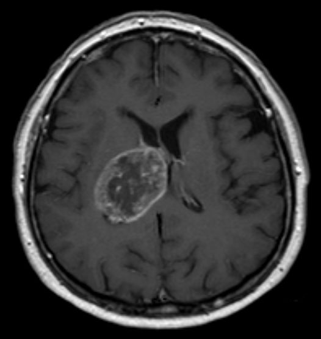

Ficha del catálogo
Glioblastoma
- Sistema
- Nervioso
- Modalidad
- RM
- Región
- Encéfalo, sustancia blanca hemisférica
- Dificultad
- Avanzado
El glioblastoma es el tumor cerebral primario maligno más frecuente del adulto y corresponde a un glioma difuso de alto grado. Se presenta con déficit neurológico progresivo, crisis convulsivas o cefalea de instalación subaguda. Su pronóstico es reservado pese al tratamiento combinado de cirugía, radioterapia y quimioterapia.
Técnica
Resonancia magnética de encéfalo con T1, T2, FLAIR, difusión, secuencias sensibles a productos hemáticos y T1 con contraste. Se complementa con perfusión y espectroscopía cuando se requiere caracterizar el grado tumoral o diferenciar recidiva de cambios por tratamiento.
Qué observar
- Masa intraaxial heterogénea con realce grueso e irregular en anillo
- Centro necrótico sin realce y sin restricción marcada a la difusión
- Extensión de la señal anómala en FLAIR más allá del componente que realza
- Paso a través del cuerpo calloso hacia el hemisferio contralateral
- Focos de hemorragia intratumoral y vasos anómalos
- Efecto de masa, desviación de línea media y compromiso ventricular
Hallazgos
Lesión intraaxial de sustancia blanca, mal delimitada, hipointensa en T1 e hiperintensa en T2 y FLAIR, con realce periférico grueso, irregular y nodular alrededor de un centro necrótico. Existe abundante señal anómala perilesional que combina edema vasogénico e infiltración tumoral, con importante efecto de masa. La perfusión muestra aumento del volumen sanguíneo cerebral en la porción sólida y es frecuente la hemorragia intratumoral.
Perlas
La porción que realza no representa todo el tumor: La infiltración se extiende por la señal anómala en FLAIR y más allá de ella, lo que explica la recurrencia local pese a resección aparentemente completa. Por eso la planificación quirúrgica y radioterápica se basa también en el volumen FLAIR y no solo en el realce.
Diagnóstico diferencial
- Metástasis única
- Suele localizarse en la unión corticosubcortical, con bordes más regulares del anillo y edema desproporcionado que respeta el patrón de infiltración difusa.
- Absceso cerebral
- El anillo es fino y regular, con pared más delgada hacia el ventrículo, y el centro muestra restricción marcada a la difusión.
- Linfoma primario del sistema nervioso central
- Realce habitualmente homogéneo, restricción difusa por alta celularidad, perfusión menos elevada y localización periventricular o profunda.
- Tumefacción desmielinizante
- Realce en anillo abierto o incompleto hacia la sustancia gris, efecto de masa menor del esperado por el tamaño y evolución favorable con corticoides.
Simuladores
- Infarto subagudo con realce giral y efecto de masa
- Encefalitis focal con edema y realce parcheado
- Radionecrosis o cambios posterapéuticos con realce progresivo
Por modalidad
- TC
- Detecta con rapidez el efecto de masa, la hemorragia intratumoral y la hidrocefalia en el contexto agudo o cuando la resonancia no está disponible.
- RM
- Caracteriza el patrón de realce, la extensión infiltrativa, la vascularización por perfusión y el perfil metabólico por espectroscopía.
Protocolo
Estudio volumétrico T1 sin y con contraste para navegación, T2, FLAIR, difusión con mapa de coeficiente aparente, secuencia sensible a susceptibilidad magnética y, según indicación, perfusión dinámica y espectroscopía multivóxel.
Clasificación
Se integra en los gliomas difusos del adulto de grado 4, definidos por criterios histológicos y moleculares (en la clasificación vigente el término glioblastoma se reserva a los tumores sin mutación de isocitrato deshidrogenasa). Los gliomas difusos con esa mutación se clasifican aparte y tienen mejor pronóstico.
Errores frecuentes
- Confundir toda la señal hiperintensa en FLAIR con edema puro y subestimar la extensión tumoral
- Interpretar el realce nuevo tras radioterapia como progresión sin considerar la pseudoprogresión
- Adjudicar a un glioma un anillo fino y regular con centro que restringe, propio del absceso

glioblastoma glioma alto grado realce en anillo necrosis perfusión cerebral tumor intraaxial